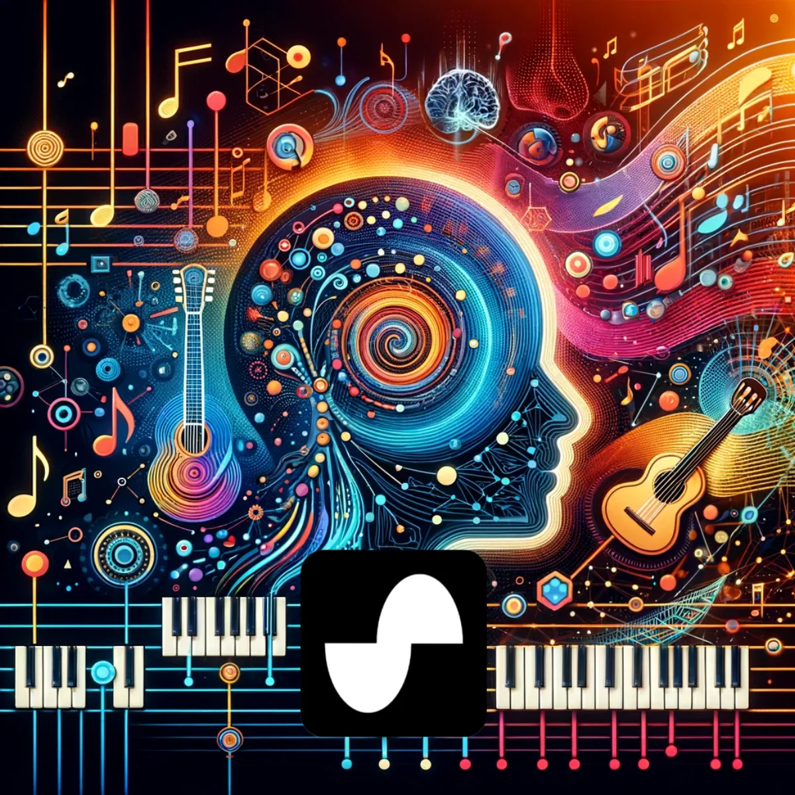
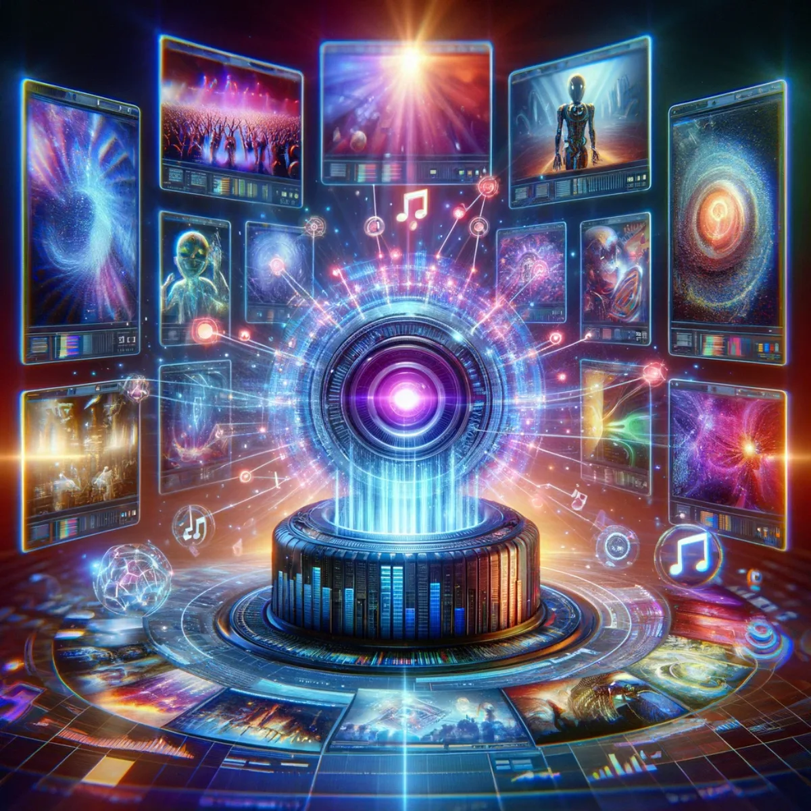

Pathways / Events, music & play
Music Creation
Build your own way to write lyrics, songs and music videos with AI beside you: a creative setup you own and shape to your own voice, one that grows with you and keeps the spirit of humanity in every track.
Lyrics crafted by AI, inspired by humanity
Generating Lyrics
Here you build your own way of writing lyrics, with generative AI as a partner rather than a product you rent by the month. You bring the feeling; the AI helps you find the words, tuned to your voice and the melody already in your head. It's a tool you shape and keep, one that learns your style as you use it, so every line still sounds like you. Poetry meets technology, and the song stays yours.

Let your lyrics flow with ChatGPT 3.5
ChatGPT 3.5
ChatGPT 3.5 is a good place to start building your own lyric-writing setup: freely composing melodies in words, feeling out rhythm and rhyme. Use it to draft, to unstick yourself, to hear where a line wants to go, whether you're after the next chart-topper or a personal ballad. It's a foundation you build on and keep, not a subscription you're locked into. Make it work the way you write, and your music finds its own voice.

Compose beyond boundaries with Custom GPT-4
Custom GPT-4
Custom GPT-4 is where your setup gets personal. Where 3.5 lays the foundation, this you tune to your own context, your emotion, the small quirks of your style, so the lyrics come back richer and closer to what you actually meant. You shape it around your own creative process, and it aligns with you more the longer you use it. This isn't generic output from someone else's product; it's a writing partner that's custom to you and evolves as you do, weaving your thoughts and themes into storytelling that stays deeply human.
The future soundtrack, composed by AI
Generating Music
Now you build the sound itself. With AI as a collaborator, you can shape beats, rhythms, genres and harmonies into compositions that are yours, tuned to your taste rather than pulled off a shelf. Chart-topping hit or a quiet background score, it becomes an endless library you direct, chord by chord, every beat a discovery, in collaboration with you and your inspiration. You keep what you make and it grows with you. Hear where this leads in the i C infinity music universe.

Where AI composes the future of music
Suno.ai
Suno.ai is another tool you can fold into your own music-making, turning ideas into finished tracks. Blend its AI with your own composition, and whether you're building intricate symphonies or chasing a new soundscape, you stay in charge of the result. It's part of a kit you assemble and own, shaped to how you like to work, so your creativity keeps its own shape and every note still holds the potential for discovery.

AI-crafted music videos that enchant and engage
Generating Music Videos
And you build the visuals too. Bring AI graphics together with the rhythm of your song and you can turn sound into sight, from abstract artistry to a full narrative journey, all directed by you. Each video is felt as much as watched, every frame in harmony with your tune. The setup is yours to keep and refine over time rather than rent by the month, so it changes as your music does. Explore it with tools like Canva, Invideo.ai, Leonardo.ai, Runway, Pika and Pixaverse.
Keep exploring